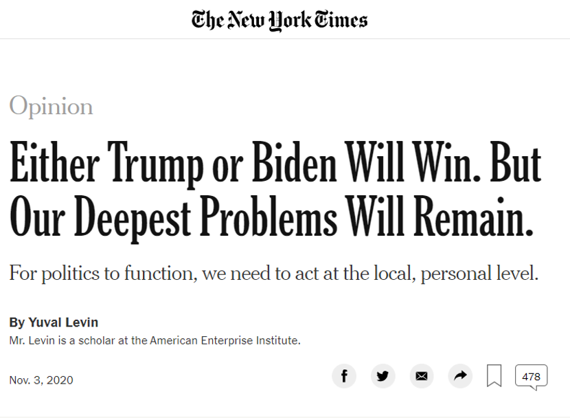
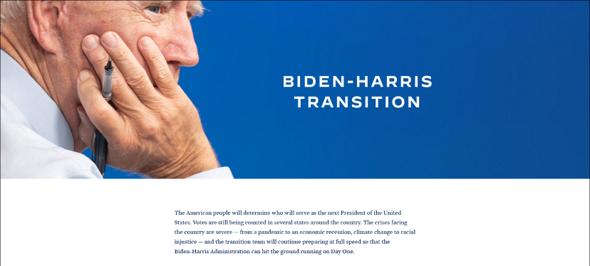
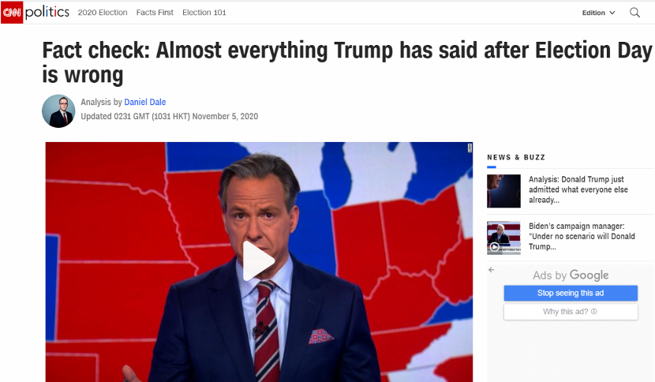
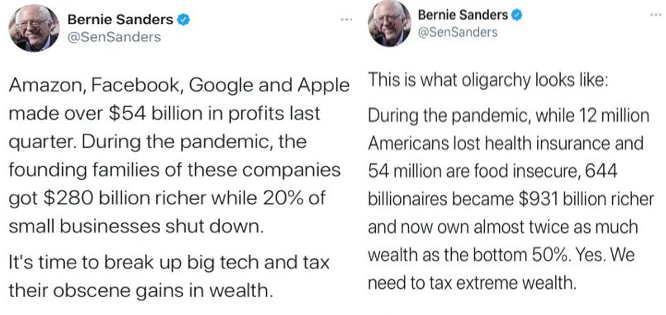
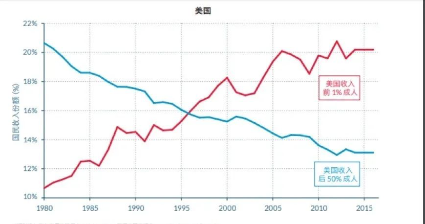
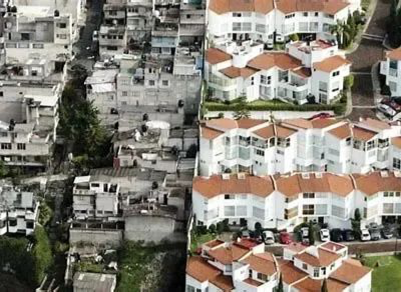

收录于合集
以下文章来源于玉渊谭天 ，作者谭主
玉渊谭天 .
简单逻辑看复杂世界
如果按照惯例，美国大选日第二天，竞选结果就会出炉，但3天过去了，今年的选举结果还没定数。
在选举结果公布前，双方都对赢得大选很有信心。
都“赢”了，那谁输了？
看看美国媒体的 失落 ，就能知道答案。
CNN：无论谁赢得了大选，美国已经 回不去了。
《纽约时报》：不管谁赢，美国深层次的问题都 没有解决。
**
**

以往美国大选，即使过程充满不确定，但是结果是唯一的。而现在的美国大选，唯一能确定的，就是不确定。
就在大选当晚，西雅图多地开始暴发示威游行。 离白宫不远 ，也发生了暴力伤人事件。
而在大选前，因为担心骚乱，连美国的时代广场上，商户都竖起了高高的木板。
第三波疫情还未散去，伴随大选而来的，是一场新的 混乱 。
正像拜登团队的竞选口号“Build Back Better”（重建更美好未来）。
4年前的“让美国再次伟大”，为何变成了 “重建”？
美国，还能回到过去么？
大选前一天，美国白宫也设置了重重围栏。
仿佛一个预告，美国要进行的，不是一场选举，而是一场 选战。
大选当晚，点票过程犹如一场过山车。
美国总统大选中一共有538张选举人票，候选人必须赢得其中至少 270 张才能确保当选。据美媒报道，当地时间4日晚，拜登拿下了264票，特朗普拿下了214票。
焦点落到拥有赌城拉斯维加斯的内华达州，这个州 正好 有6张选举人票，如果拜登凑齐这6票，选举就有了结果。
就像一个隐喻，美国人都在经历一场 豪赌。
****
按照《时代》杂志评论的话说：
“我们站在一个罕见的时刻，对几代人来说，它将标志着‘曾经’和‘未来’的分野。”
这次大选的投票率也达到了1908年以来 最高。 大选之前，就有超过9000万人提前投票。
加上“选举日”排队投票和邮寄选票，投票总人数将达到1.5亿 。
只不过，美国人的选择，最终变成了 一地鸡毛。
眼看可能落选，票选结果出炉前，特朗普竞选团队声称已在多州发起法律诉讼，要求拜登胜选的威斯康星州 重新 计票， 审查 密歇根州计票， 停止 宾夕法尼亚、佐治亚州计票。
而且，他们还向最高法院提起了诉讼。
票选大战可能向混战演变，这场赌局可能依然没有结果。加州大学教授理查德·哈森最近出了一本书名字叫《选举崩溃》。
书里他已经做了 预言：
“我们很可能会在法庭和街头看到一场旷日持久的选后斗争。”
从大选日2020年11月3日，到2021年的1月20日美国新总统的就职仪式，一共有79天过渡期，充满了新的 不确定性。
历史上，并非没有靠闹到联邦法院赢得连任的局面，甚至今天的情节都能在美国历史上找到情景再现。
1876年的美国大选，民主党候选人蒂尔登在当晚计票中领先，但因为剩下几个州没有及时开出剩余的20张选举人票的结果，两党都声称自己获得了胜利。
最后闹到联邦法院，包括最高法院大法官、参议员、众议员组成的15人选举委员会将20张选举人票 直接 判给了共和党候选人。
结果，共和党候选人海斯反而以一票优势胜出，差点引发 内乱。
最近一次的选举闹剧则是发生在2000年。
美国人甚至专门写了一本书来纪念此事件，名字就叫《法庭上的巅峰对决：布什与戈尔总统大选之争》。

一直关注美国选举的中国人民大学学者刁大明告诉谭主：
过去44任总统当中，有近一半连任，尤其是在近些年，总统连任十分普遍。
特朗普政府 “让美国再次伟大”（Make America Great Again）的努力是否会画上句号，四年过去，他们又是否实现了在竞选时的承诺呢？
“保持美国伟大”（Keep America Great），这是特朗普2020年的竞选口号。
在被问及这一口号和2016年“让美国再次伟大”（Make America Great Again）有什么区别时，特朗普表示：
“我们已经让美国再次伟大起来了”。
这样的 “自信” ，一如既往。
《纽约时报》和CNN在2019年11月对特朗普上任33个月以来，更新的11887条推文进行了分析。
其中 自夸 的推文，有2026条。
如果参照国情咨文里说的，这份“自信”看起来 颇有底气：
-
自我当选以来，我们创造了700万个新就业机会，比上届政府专家预测的多500万个
-
收入最低的一半人的净资产增长47%，比最富有1%的资产增长速度快三倍
-
美国现在增加了12000家新工厂，还有数以千计的工厂正在规划或建设中
-
美国股市飙升70%，为我们国家增加超过12万亿美元的财富，超乎所有人想象
新增岗位、制造业回流、失业率，加上股市， 听起来 光鲜亮丽的四个指标背后，又是什么呢？

有些成绩， 无中生有。
特朗普曾在采访中说过，自己创造了美国历史上最好的经济。
但 实际上 ，在疫情爆发前，美国经济的年均增长率只有2.48%，仅好于奥巴马第二个任期的2.41%。
特朗普也说过，非裔美国人的收入相较于上届政府增长了9倍。
但 实际上 ，从2016-2018年，美国黑人家庭收入中位数，只增加了39美元。
有些成绩， 瞒天过海。
谭主把特朗普上任后，美国劳工部每月公布的“非农新增就业人数”做了个加法，700万，是对的。
但这个数是“新增”，不是“净增”，流失的工作岗位，并不计入统计。
而这些新增的就业机会，大多都是 “夏天海滩端盘子” ——这是中国人民大学重阳金融研究院助理院长贾晋京给谭主打的比方。
新增的岗位，大多都是 临时性 的。
贾晋京告诉谭主，真正反映经济状况的指标，应该是劳动参与率。美国2019年的劳动参与率是62.9%——在1980年以来最低区间上下波动。
与就业息息相关的“制造业回流”，同样是美国政府 鼓吹 的“政绩”。
要知道，美国制造业的平均周薪为922美元，接近餐饮业周薪的三倍。制造业回流，确实能“让美国再次伟大”。
但美国，如愿了么？
有一家美国格外在意的工厂可以说明问题，它就是富士康。
2018年6月，特朗普来到美国威斯康辛州，参加富士康的液晶面板基地的奠基仪式。仪式上，他甚至还亲自铲土，为工厂开工。
开工前，富士康承诺，要为工厂投资100亿美元，并在2022年之前，雇佣13000名员工。
同时，威斯康辛州承诺给予富士康30亿到48亿不等的补贴——这是美国有史以来对外国公司最大的补贴。
它承载着美国对制造业回流的希冀——特朗普将其称为“世界第八大奇迹”，承诺要在一夜之间把威斯康辛州变成高科技制造强州。
但到去年年底，富士康聘请的符合合同条款的员工只有281名，甚至都不到预计的零头。
富士康工厂的境遇，就是美国制造业回流的缩影。
缺乏有相关技能的劳动力、劳动成本过高、配套基础设施的短板都成为制约制造业回流的重要原因。
最为重要的，是“股东第一主义”——为了追求更高的资本 回报率 ，美国跨国公司开始追逐轻资产，纷纷剥离“沉重”的制造业，这是美国资本做出的选择。
美国制造业的复兴并不是邀请几家企业到美国建厂那么简单。与制造业“冷清”相对应的，是资本的狂欢。
特朗普政府执政这四年，美国股市上涨了70%。但得益者，并不是普通民众。
中国人民大学重阳金融研究院研究员刘志勤告诉谭主：
“白宫一直在向美国的大型企业传递一个信号：支持我，你们一定会有好处，股市也一定会上升。”
根据美联储数据显示，美国最富有的1%人群持有超过50%的股票和股份，最富有的10%人群，持有超过88%的股票。
特朗普政府“让美国再次伟大”的四个指标，其中三个，和普通美国民众相关，但却是 虚假 的。最后一个是真实的，但那只是极少数 富人的狂欢。
美国有没有“再次伟大”，不好说。
但美国，一定 “更为撕裂”。
**
**
这种撕裂的直接受害者是谁，在疫情期间则尤为露骨和刺眼。
这是美国参议员伯尼·桑德斯在社交媒体上发布的一组数字。

在疫情期间，20%的美国小企业倒闭；1200万美国人失去了医疗保险；没有食物保障的美国人有5400万。
与此同时，644位美国亿万富翁的财富增加了9310亿美元。
冰火两重天的背后是社会的撕裂，美国的贫富差距在过去50年中一直在扩大。

▲时间财富与收入不平均数据库，《世界不平均报告2018》
在1980年，美国收入最高的1%群体，他们的总收入在国民收入中的份额只有10%左右，而到2015年，这个比例超过了20%，几乎翻了一番。
与此同时，收入最低的50%的群体，他们的总收入在国民收入的占比变化则是完全相反的，从20%降到了12%左右。

当贫富差距不断扩大，背后的深层问题也 浮出水面 ，极端的两极分化被摆在了执政党的面前：
-
一方是占大多数的普通民众，但是他们手中掌握的财富寥寥。
-
另一方是超级富有的极少数群体，但是他们手中的选票有限。
双方的根本利益不可调和，美国的执政党只能二选一，代表其中一方的利益。
显然，在过去四年，美国的执政党选择了 财阀 ，毕竟选举的资金、招徕候选人的能力、活动的骨干和组织的运行都需要资金不断投入，作为交换，他们出台的政策也越来越向财阀倾斜。
“蛋糕”只有那么大，给一方切多了，另外一方得到的势必就少了。
在投靠“金主”的同时他们又面临一个困境：怎样让富人越来越富的同时，又赢得越来越穷的普通民众的支持？
根植于巨大贫富差距的民主困境逐渐引起了极大关注，在今年出版的《推特治国》一书中，作者雅各布·哈克进行了深刻剖析，引起了极大反响。
谭主联系了哈克进行了一番探讨，他把执政党的解决方式总结为“财阀民粹主义”，既然在经济利益上无法满足普通民众，那就用民粹主义调动他们的支持。
许多组织成为政党的“基层代理人”，比如 “美国全国步枪协会（NRA）”。
在执政党的支持下，全国步枪协会在全美不断扩大拥枪权，随着枪支拥有率的提高，全国步枪协会利用对枪支使用和安全教育的培训职责建立了庞大的会员网络和基层组织，目前，会员人数超过500万人，相当于美国一个中等规模的州，影响力 不断扩大。
在培训过程中，协会不断宣传持枪对于人身安全和自由的意义，选用的案例中非洲裔和拉丁裔美国人常常以施暴者的形象出现， 故意 营造出一种威胁感，而在威胁感下，人们更容易塑造身份认同。控枪和拥枪问题逐渐演变成了种族对抗问题。
而这些都被保守派政党 利用 ，成为平衡的砝码，他们把普通民众的注意力从巨大的贫富差距转移到了种族、移民问题上，激发民粹主义，并通过在种族问题上和民众保持一致来获得支持。
过去四年，财阀民粹主义大行其道，随着贫富差距越来越大，执政党并没有直面问题，重新平衡利益分配，而是不断转移矛盾，进一步激发民粹主义。
不仅如此，他们甚至直接 挑战 民主制度，特朗普竞选团队声称要在多州及最高法院发起法律诉讼，审查计票的手段就是最好的证明，美国的民主已经十分脆弱。
据媒体预测，今年美国的枪支销售或将创下新的纪录。为什么？
大选前一天，《经济学人》发布了一项调查结果：
58%可能投票的选民认为，特朗普连任会引发大规模抗议；22%的人认为拜登获胜很可能引发抗议。
数百万美国人担心大选将伴随着暴乱和动荡，这也是财阀民粹主义带来的恶果。
摆在新任总统和执政党面前的问题已经 迫在眉睫。
对于美国民主的未来，雅各布·哈克表达了他的担忧：
这一困境是否能得到解决？美国人还在等一个答案。